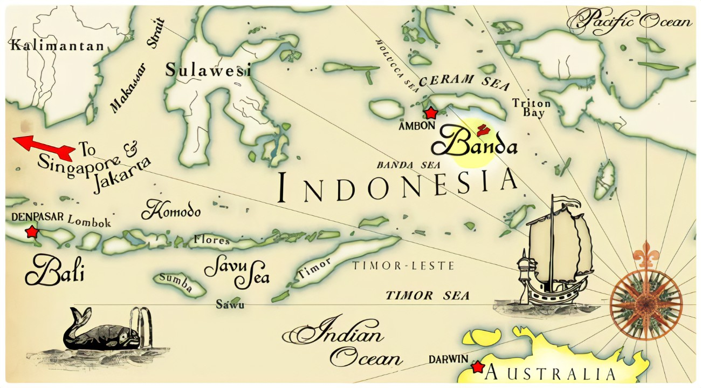

Let's explore!" ?>
Banda Neira, Maluku.
Sudah sejak lama Indonesia terkenal akan keindahan alam dan berbagai tempat bersejarahnya. Salah satunya kawasan wisata yang terletak di bagian Timur yaitu kepulauan Banda.
Banyak sekali berbagai tempat wisata di Banda Neira yang bisa kamu nikmati keindahannya dan juga mengandung nilai sejarah yang tinggi.